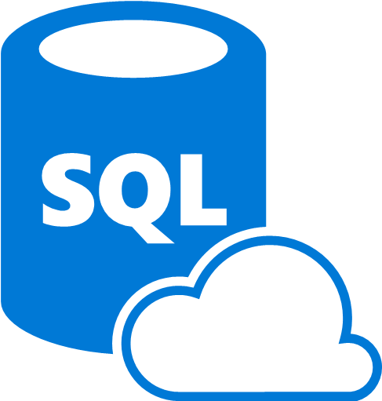
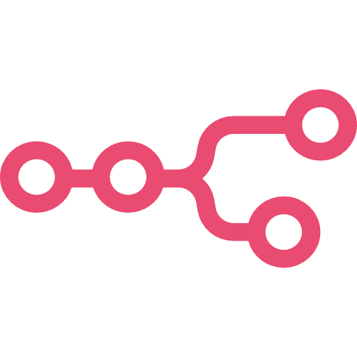

Tech Skills
Essas são algumas das minhas Tech Skills, onde busco sempre progredir a cada dia.
 C
C Git/GitHub
Git/GitHubJava

SQL
N8NHabilidades
- Organizado: faço atividades com antecedência e gosto de deixar os ambientes e projetos bem alinhados.
- Comprometido: não faço somente o necessário, demonstro comprometimento com objetivos e com as necessidades da equipe.
- Raciocínio lógico: analiso informações objetivamente e chego rapidamente em conclusões válidas por meio de conexões causais.
- Gerenciamento de projetos: consigo planejar, executar e monitorar projetos para garantir que sejam concluídos com sucesso dentro do prazo e do orçamento.
- Idiomas: português (nativo), espanhol (fluente), inglês (intermediário avançado).